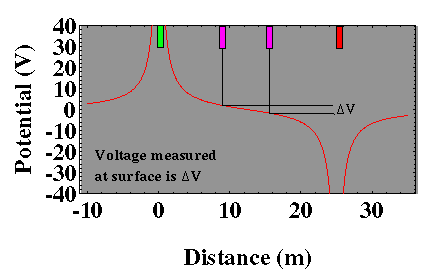
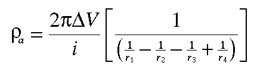

A Practical Way of Measuring Resistivity
Using an experimental configuration where the two current electrodes are placed relatively close to one another as described previously and using two potential electrodes placed between the two current electrodes, we can now estimate the resistivity of our homogeneous earth. The configuration of the four electrodes for this experiment is shown below. Let the distances between the four electrodes be given by r1, r2, r3, and r4, as shown in the figure.
The potential computed along the surface of the earth is shown in the graph below. The voltage we would observe with our voltmeter is the difference in potential at the two voltage electrodes, ΔV. The horizontal positions of the four electrodes, two current (red and green) and two potential (purple), are indicated along the top of the figure.

Notice, that in this configuration, the voltage recorded by the voltmeter (ΔV) is relatively small. That is, the difference in the potential at the locations of the two potential electrodes is small. We could increase the size of the voltage recorded by the voltmeter by moving the two potential electrodes outward, closer to the two current electrodes. For a variety of reasons, some related to the reduction of noise and some related to maximizing the depth over which our measurements are sensitive, we will typically not move the potential and current electrodes close together. Thus, a very sensitive voltmeter must be used. In addition to having a large impedance, voltmeters need to be able to record voltage differences down to mV (10^-3 volts). If the potential electrodes were moved closer to the two current electrodes, larger voltages would be recorded. For a variety of reasons, however, we will typically not do this in the field.
Knowing the locations of the four electrodes, and by measuring the amount of current input into the ground, i and the voltage difference between the two potential electrodes, ΔV, we can compute the resistivity of the medium, ρα, using the following equation.

In this particular case, regardless of the location of the four electrodes, ρα will be exactly equal to the resistivity of the medium. The resistivity computed using the equation given above is referred to as the apparent resistivity. We call it the apparent resistivity for the following reason. We can always compute ρα, and we only need to know the locations of the electrodes and measure the current and voltage. If, however, the Earth does not have a constant resistivity (that is, if the resistivity varies with depth or horizontally), the resistivity computed by the above equation will not represent the true resistivity of the Earth. Thus, we refer to it as an apparent resistivity.
As a final caveat, as written above, the difference between the apparent and the true resistivity of the medium is not a function of any noise that might be associated with the measurements we are attempting to record. The difference, rather, comes from the fact that our measurement, in some sense, averages the true resistivities of some region of the earth, yielding an apparent resistivity that may or may not represent the true resistivity at some point within the earth.
Resistivity
- Current Flow and Ohm's Law pg 4
- The Fund. Electrical Property is Resistivity, NOT Resistance pg 5
- Resistivities for Common Earth Materialspg 6
- Current Density and Electric Fieldpg 7
- A First Estimate of Resistivitypg 8
- Current Flow From Two Closely Spaced Electrodespg 9
- A Practical Way of Measuring Resistivity pg 10
- Sources of Noise pg 11
- Depth of Current Penetration V.S. Current ElectrodeSpacing pg 12
- Current Flow in Layered Media pg 13
- Variation in Apparent Resistivity: Layered Versus Homogeneous Media pg 14
- Current Flow in Layered Media Versus Electrode Spacing pg 15
- A Second Example of Current Flow in Layered Mediapg 16